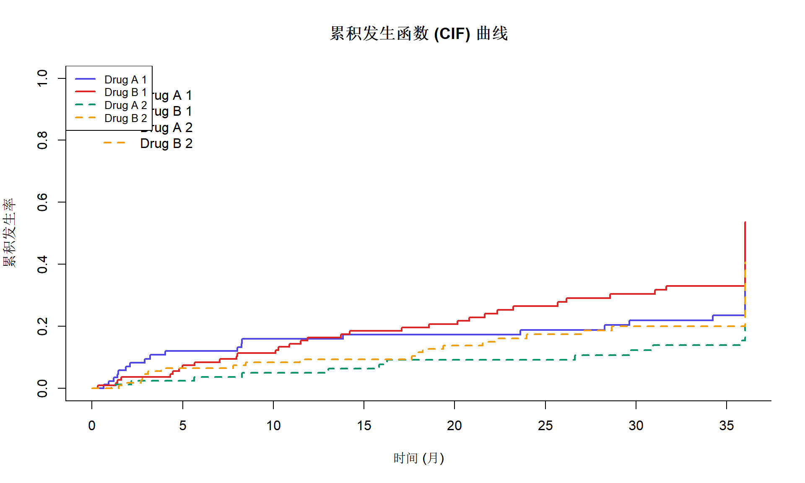

# 安装必要的R包
packages <- c("survival", "cmprsk", "tidyverse")
for (pkg in packages) {
if (!require(pkg, character.only = TRUE, quietly = TRUE)) {
install.packages(pkg)
library(pkg, character.only = TRUE)
}
}竞争风险分析 (Competing Risks)
统计方法
生存分析
在临床研究中，患者可能因多种原因退出观察（如死亡可能来自心血管疾病或癌症）。竞争风险分析是处理存在多个互斥结局的生存数据的专业方法，能够更准确地估计特定事件的发生风险。
什么是竞争风险？
在传统的生存分析（如Kaplan-Meier方法和Cox回归）中，我们假设： - 删失（censoring）是非信息性的 - 如果观察时间足够长，所有人最终都会经历感兴趣的事件
但在实际研究中，竞争风险（Competing Risks）是指：当一个事件发生后，会阻止我们观察到感兴趣事件的情况。
典型场景举例
| 研究目的 | 感兴趣事件 | 竞争风险事件 |
|---|---|---|
| 心血管死亡风险 | 心血管死亡 | 非心血管死亡 |
| 癌症复发 | 癌症复发 | 死亡（任何原因） |
| 器官移植 | 接受移植 | 等待期间死亡 |
| 糖尿病并发症 | 肾病 | 心血管疾病死亡 |
为什么需要竞争风险分析？
传统方法的问题
使用标准Kaplan-Meier方法处理竞争风险数据时，如果将竞争事件简单地作为删失处理，会高估感兴趣事件的累积发生率。
这是因为KM方法假设删失是随机的，但竞争风险事件的发生本质上是信息性删失。
两种主要分析方法
- Cause-specific hazard (病因特异性风险)：研究协变量对特定事件瞬时风险的影响
- Subdistribution hazard (Fine-Gray模型)：研究协变量对累积发生率的影响
R包安装与加载
数据准备
我们使用模拟的临床试验数据来演示竞争风险分析：
# 模拟竞争风险数据
set.seed(42)
n <- 200
# 创建模拟数据
sim_data <- data.frame(
id = 1:n,
trt = sample(c("Drug A", "Drug B"), n, replace = TRUE),
age = round(rnorm(n, 55, 12)),
grade = sample(c("I", "II", "III"), n, replace = TRUE, prob = c(0.3, 0.4, 0.3))
)
# 模拟生存时间和竞争风险事件
# status: 0=删失, 1=感兴趣事件(癌症死亡), 2=竞争事件(其他原因死亡)
sim_data$time <- pmin(rexp(n, 0.03), 36) # 最大随访36个月
sim_data$status <- sample(0:2, n, replace = TRUE, prob = c(0.4, 0.35, 0.25))
# 查看数据结构
head(sim_data) id trt age grade time status
1 1 Drug A 69 III 4.444211 0
2 2 Drug A 68 II 2.152684 0
3 3 Drug A 43 I 1.474983 0
4 4 Drug A 77 II 36.000000 0
5 5 Drug B 47 III 1.304468 1
6 6 Drug B 56 III 36.000000 0# 事件分布
table(sim_data$status)
0 1 2
71 76 53 使用cmprsk包进行累积发生函数分析
计算CIF
library(cmprsk)
# 准备数据
ftime <- sim_data$time
fstatus <- sim_data$status
group <- as.factor(sim_data$trt)
# 计算累积发生函数
cif_fit <- cuminc(ftime, fstatus, group)
# 查看结果
print(cif_fit)Tests:
stat pv df
1 1.412838 0.2345859 1
2 2.392749 0.1218991 1
Estimates and Variances:
$est
10 20 30
Drug A 1 0.15905506 0.1729381 0.2195594
Drug B 1 0.11378896 0.2068368 0.3042480
Drug A 2 0.04961402 0.0917772 0.1230801
Drug B 2 0.08393180 0.1378508 0.2000742
$var
10 20 30
Drug A 1 0.0016688069 0.001807077 0.002307259
Drug B 1 0.0009692178 0.001651098 0.002334060
Drug A 2 0.0005949177 0.001119337 0.001525316
Drug B 2 0.0007259699 0.001199187 0.001764122可视化CIF曲线
# 绑制CIF曲线
plot(cif_fit,
xlab = "时间 (月)",
ylab = "累积发生率",
main = "累积发生函数 (CIF) 曲线",
col = c("#4f46e5", "#dc2626", "#059669", "#f59e0b"),
lty = c(1, 1, 2, 2),
lwd = 2
)
# 添加图例
legend("topleft",
legend = names(cif_fit)[1:4],
col = c("#4f46e5", "#dc2626", "#059669", "#f59e0b"),
lty = c(1, 1, 2, 2),
lwd = 2,
cex = 0.8
)
Gray检验
Gray检验是比较不同组别间CIF差异的非参数检验方法：
# Gray检验结果已包含在cuminc输出中
cif_fit$Tests stat pv df
1 1.412838 0.2345859 1
2 2.392749 0.1218991 1Fine-Gray模型
Fine-Gray模型（亚分布风险模型）是竞争风险分析中最常用的回归方法：
模型原理
- 使用亚分布风险函数而非病因特异性风险
- 将竞争事件发生的个体保留在风险集中（赋予权重）
- 结果解释：协变量对累积发生率的影响
# 准备协变量矩阵
cov_matrix <- model.matrix(~ trt + age + grade, data = sim_data)[, -1]
# 构建Fine-Gray模型
fg_model <- crr(
ftime = sim_data$time,
fstatus = sim_data$status,
cov1 = cov_matrix,
failcode = 1 # 感兴趣的事件编码
)
# 查看模型结果
summary(fg_model)Competing Risks Regression
Call:
crr(ftime = sim_data$time, fstatus = sim_data$status, cov1 = cov_matrix,
failcode = 1)
coef exp(coef) se(coef) z p-value
trtDrug B 0.24484 1.277 0.22565 1.0850 0.28
age 0.00167 1.002 0.00815 0.2046 0.84
gradeII 0.23958 1.271 0.28161 0.8508 0.39
gradeIII -0.02344 0.977 0.29561 -0.0793 0.94
exp(coef) exp(-coef) 2.5% 97.5%
trtDrug B 1.277 0.783 0.821 1.99
age 1.002 0.998 0.986 1.02
gradeII 1.271 0.787 0.732 2.21
gradeIII 0.977 1.024 0.547 1.74
Num. cases = 200
Pseudo Log-likelihood = -367
Pseudo likelihood ratio test = 2.45 on 4 df,结果解释
# 提取关键结果
fg_coef <- summary(fg_model)$coef
# 创建结果表格
result_table <- data.frame(
Variable = rownames(fg_coef),
sHR = round(exp(fg_coef[, "coef"]), 3),
`95% CI Lower` = round(exp(fg_coef[, "coef"] - 1.96 * fg_coef[, "se(coef)"]), 3),
`95% CI Upper` = round(exp(fg_coef[, "coef"] + 1.96 * fg_coef[, "se(coef)"]), 3),
P_value = round(fg_coef[, "p-value"], 4)
)
print(result_table) Variable sHR X95..CI.Lower X95..CI.Upper P_value
trtDrug B trtDrug B 1.277 0.821 1.988 0.28
age age 1.002 0.986 1.018 0.84
gradeII gradeII 1.271 0.732 2.207 0.39
gradeIII gradeIII 0.977 0.547 1.744 0.94病因特异性风险模型
与Fine-Gray模型不同，病因特异性风险模型关注的是瞬时风险率：
library(survival)
# 癌症死亡作为事件，其他死亡作为删失
cause_specific_model <- coxph(
Surv(time, status == 1) ~ trt + age + grade,
data = sim_data
)
summary(cause_specific_model)Call:
coxph(formula = Surv(time, status == 1) ~ trt + age + grade,
data = sim_data)
n= 200, number of events= 76
coef exp(coef) se(coef) z Pr(>|z|)
trtDrug B 0.374165 1.453777 0.236480 1.582 0.114
age -0.001860 0.998142 0.009651 -0.193 0.847
gradeII 0.322012 1.379902 0.287979 1.118 0.263
gradeIII 0.069921 1.072424 0.313757 0.223 0.824
exp(coef) exp(-coef) lower .95 upper .95
trtDrug B 1.4538 0.6879 0.9145 2.311
age 0.9981 1.0019 0.9794 1.017
gradeII 1.3799 0.7247 0.7847 2.426
gradeIII 1.0724 0.9325 0.5798 1.984
Concordance= 0.56 (se = 0.04 )
Likelihood ratio test= 4.13 on 4 df, p=0.4
Wald test = 4.09 on 4 df, p=0.4
Score (logrank) test = 4.13 on 4 df, p=0.4两种模型的比较
何时使用哪种模型？
| 研究目的 | 推荐方法 | 理由 |
|---|---|---|
| 病因学研究 | Cause-specific HR | 反映暴露与疾病的”真正”关联 |
| 预后预测 | Fine-Gray (sHR) | 直接关联累积发生率 |
| 公共卫生决策 | Fine-Gray (sHR) | 反映实际人群中的风险 |
| 临床试验 | 通常两者都报告 | 提供完整信息 |
模型诊断
比例风险假设检验
# 对病因特异性模型进行PH检验
ph_test <- cox.zph(cause_specific_model)
print(ph_test) chisq df p
trt 2.062 1 0.15
age 0.973 1 0.32
grade 0.855 2 0.65
GLOBAL 4.120 4 0.39# 可视化Schoenfeld残差
if (any(ph_test$table[, "p"] < 0.1)) {
plot(ph_test)
} else {
cat("所有变量满足比例风险假设\n")
}所有变量满足比例风险假设结果报告模板
方法学描述
对于竞争风险数据，我们采用Fine-Gray亚分布风险模型评估各因素对主要终点（癌症相关死亡）累积发生率的影响。竞争风险事件定义为非癌症相关死亡。使用Gray检验比较不同组间累积发生函数的差异。所有分析使用R软件的cmprsk包完成。
结果描述
在XX例患者中，XX例(XX%)发生癌症相关死亡，XX例(XX%)发生非癌症死亡，XX例(XX%)仍存活。24个月时，药物A组和药物B组的癌症死亡累积发生率分别为XX% (95%CI: XX-XX%)和XX% (95%CI: XX-XX%)，Gray检验P = XX。
多因素Fine-Gray模型显示，XX是癌症死亡的独立危险因素（sHR = XX, 95%CI: XX-XX, P < 0.05）。
实用技巧
1. 如何定义竞争事件
# 常见的竞争风险编码方式
data <- data %>%
mutate(
status_cr = case_when(
event == 0 ~ 0, # 删失
event == 1 & cause == "A" ~ 1, # 感兴趣事件
event == 1 & cause == "B" ~ 2, # 竞争事件1
event == 1 & cause == "C" ~ 2, # 竞争事件2（可合并）
TRUE ~ NA_real_
)
)2. 多个竞争事件
# 分析不同竞争事件
# failcode=1 分析事件1
fg_event1 <- crr(ftime, fstatus, cov1, failcode = 1)
# failcode=2 分析事件2
fg_event2 <- crr(ftime, fstatus, cov1, failcode = 2)3. 敏感性分析
# 比较将竞争事件作为删失 vs 正确处理的差异
# 方法1：标准KM（可能高估）
km_naive <- survfit(Surv(time, status == 1) ~ group, data = data)
# 方法2：正确的CIF
cif_correct <- cuminc(ftime, fstatus, group)
# 比较两种估计参考文献
- Fine JP, Gray RJ. A Proportional Hazards Model for the Subdistribution of a Competing Risk. JASA. 1999;94(446):496-509.
- Austin PC, Fine JP. Practical recommendations for reporting Fine-Gray model analyses for competing risk data. Stat Med. 2017;36(27):4391-4400.
- Latouche A, et al. A competing risks analysis should report results on all cause-specific hazards and cumulative incidence functions. JCE. 2013;66(6):648-653.
总结
| 要点 | 说明 |
|---|---|
| 何时使用 | 存在多个互斥终点事件时 |
| CIF | 比KM更准确估计累积发生率 |
| Fine-Gray | 用于预后预测和公共卫生决策 |
| 病因特异性 | 用于病因学研究 |
| 报告 | 建议同时报告两种分析结果 |